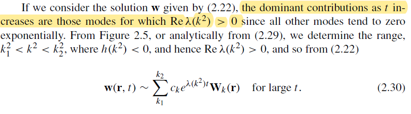

2021.9.15¶
-
due: 14days
-
图灵斑图是什么？(Turing Pattern)
- 图灵斑图的失稳条件
Reaction Diffusion Model¶
-
original problem: explain how biological spatial patterns are formed
-
Bio image of the RD model: a system of cells interactin by the ligands and receptors

(Kondo, 2010) in SOM
two kinds of lingands u and v, which satisfy the following conditons:
- diffusible
- cells have receptors for both
-
ligands interactions with each other
-
RD model
 + u is activator
+ v is inhibitor
+ u is activator
+ v is inhibitor -
Turing's original paper:

-
RD model can generate six potential steady states

(Kondo, 2010)
Turing Pattern¶
-
definition: a kind of nonlinear wave that is maintained by the dynamic equilibrium of the system (fig A, VI)
-
形成条件
In Turing's model, substance P promotes the production of more substance P as well as substance S. However, substance S inhibits the production of substance P;
- if S diffuses more readily than P, sharp waves of concentration differences will be generated for substance P.
-
An important feature of Turing´s model is that particular wavelengths in the substances' distribution will be amplified while other wavelengths will be suppressed
Turing Instability (diffusion-driven instability)¶
Mathematical Biology II: Spatial Models and Biomedical Applications, Third Edition
-
definition: the homogeneous steady state is stable to small perturbations in the absence of diffusion but unstable to small spatial perturbations when diffusion is present
-
math results: zero flux conditions(no external input)
-
stable to small perturbations without diffusion:
 $$
f_u\cdot g_v<0
$$
$$
f_u\cdot g_v<0
$$ -
unstable with diffusion
-
-
intuition:

-
文献调研： 已有最大课题组 以及课题
{kind=link}
2021.9.30¶
-
总结一下近年来，对于“生物中的斑图”的研究进展，特别是以合成生物学方法人工设计斑图的：有哪几个大组，做了什么工作，用了什么方法。
-
参考前人文献，看基于细胞的图灵斑图，应该如何建模
progress of synthetic biological pattern¶

Luo et al. 2019
Non-autonomous patterns¶
-
with prepatterned environmental cues, like morphogen gradients
-
pattern formation with morphogen gradients( band pass system)
-
character: two antagonizing pathways with different kinetics: negative & positive
- pattern tuned by
- morphogen gradient
- circuit modulation
- pattern tuned by
-
1960s Lewis Wolpert Frech Flag model
Wolpert, L. (1969) Positional information and the spatial pattern of cellular differentiation. J. Theor. Biol. 25, 1−47
-
AHL-GFP system:
Basu, S., Gerchman, Y., Collins, C., Arnold, F., and Weiss, R. (2005) A synthetic multicellular system for programmed pattern formation. Nature 434, 1130−1134
-
kill-death by ampicillin concentration
Sohka, T., Heins, R. A., Phelan, R. M., Greisler, J. M., Townsend, C. A., and Ostermeier, M. (2009) An externally tunable bacterial bandpass filter. Proc. Natl. Acad. Sci. U. S. A. 106, 10135−10140.
-
nisin dual func molecule:
Greber, D., and Fussenegger, M. (2010) An engineered mammalian band-pass network. Nucleic Acids Res. 38, No. e174.
-
James Sharpe: All possible netowrks that can form stripes with theoretical & experiments
Schaerli, Y., Munteanu, A., Gili, M., Cotterell, J., Sharpe, J., and Isalan, M. (2014) A unified design space of synthetic stripe-forming networks. Nat. Commun. 5, 4905.
-
-
pattern formation with prepatterned enviro cues
- light-dark edges system: Tabor et al. 2009
self-organized patterns¶
-
with uniform initial conditions
-
1952, Alan Turing: reaction-diffusion pattern
Turing, A.M. (1952). The chemical basis of morphogenesis. Phil. Trans. R. Soc. Lond. B 237, 37–72.
-
pattern formation is triggered by diffusion-driven instability. (Kondo et al. 2010)
-
behavior, topology, properties of turing patterns:
(28) Zheng, M. M., Shao, B., and Ouyang, Q. (2016) Identifying network topologies that can generate turing pattern. J. Theor. Biol. 408, 88−96. (29) Dillon, R., Maini, P. K., and Othmer, H. G. (1994) Pattern- Formation in Generalized Turing Systems 0.1. Steady-State Patterns in Systems with Mixed Boundary-Conditions. J. Math Biol. 32, 345−393. (30) Diego, X., Marcon, L., Muller, P., and Sharpe, J. (2018) Key Features of Turing Systems are Determined Purely by Network Topology. Phys. Rev. X 8, 021071.
-
obstacle to generate Turing patterns in living system: the constraint on paras
- diffusion rate of activator much larger than that of inhibitor (Koch & Meinhardt, 1994)
- constraint can be relaxed considering the stochasticity(Karig et al. 2018)
- constraint can be relaxed if depending on the initial conditions(Sekine et al. 2018)
-
core-ring pattern of gene expression, bacterial colonies
Payne, S., Li, B., Cao, Y., Schaeffer, D., Ryser, M. D., and You, L. (2013) Temporal control of self-organized pattern formation without morphogen gradients in bacteria. Mol. Syst. Biol. 9, 697.
- scale invariance explained(Cao et al. 2016)
- morphogen as a temporal cue (Cao et al. 2016)
-
-
density dependent motility(Liu et al. 2011)
- patterns of alternating rings of high and low cell densities within a bacterial colony
- mechanism:
- Accumulating cell density slows local cell movement, creating aggregates of nonmotile cells that keep trapping more cells.
- Escaping cells rapidly spread out, leaving regions with low cell density, and move into the front with abundant nutrients where the cell density increases.
-
differentiated cell adhesion
-
phase separation of two cell types by different cadherins (Cachat et al. 2016)
-
sequential pattern formation and structure development following the genetic coding of cell−cell contact-mediated cell adhesion and differentiation
Toda, S., Blauch, L. R., Tang, S. K. Y., Morsut, L., and Lim, W. A. (2018) Programming self-organizing multicellular structures with synthetic cell-cell signaling. Science 361, 156−162.
-
expanded the inventory for designing cell adhesion-based patterns(Glass et al. 2018)
- cell adhesion alone can result in various selforganized multicellular patterns.
-
tools to build synthetic patterns¶
Cell−cell communication¶
-
bacterial quorum sensing and fungal pheromone communication (Hennig et al. 2015)
-
cell surface sensors and diffusible signals in bacteria and eukaryotic systems
-
small peptides, cell wall components, small RNAs, and secondary metabolites
(46) Visick, K. L., and Fuqua, C. (2005) Decoding microbial chatter: cell-cell communication in bacteria. J. Bacteriol. 187, 5507−5519. (47) von Bodman, S. B., Willey, J. M., and Diggle, S. P. (2008) Cell-cell communication in bacteria: united we stand. J. Bacteriol. 190, 4377− 4391. (48) Mittelbrunn, M., and Sanchez-Madrid, F. (2012) Intercellular communication: diverse structures for exchange of genetic information. Nat. Rev. Mol. Cell Biol. 13, 328−335.
-
ion-mediated bioelectric signaling
(49) Prindle, A., Liu, J., Asally, M., Ly, S., Garcia-Ojalvo, J., and Süel, G. M. (2015) Ion channels enable electrical communication in bacterial communities. Nature 527, 59−63. (50) Adams, D. S., and Levin, M. (2013) Endogenous voltage gradients as mediators of cell-cell communication: strategies for investigating bioelectrical signals during pattern formation. Cell Tissue Res. 352, 95−122. (51) McNamara, H. M., Zhang, H. K., Werley, C. A., and Cohen, A. E. (2016) Optically Controlled Oscillators in an Engineered Bioelectric Tissue. Phys. Rev. X 6, 031001.
-
cell−cell adhesion¶
- cadherin (Halbleib et al. 2006)
- nanobody-based system (Glass et al. 2018)
mathematical modeling¶
- identify the essential components and network topology through screening of the design space(Schaerli et al. 2014 )
- identify the important constraints for the parameter space(Cao et al. 2016)
Leading Groups and Major Contributions¶
Morphogeon gradients¶
Satoshi Toda: Diffusible synNotch¶
Satoshi Toda et al., (202010) Engineering synthetic morphogen systems that can program multicellular patterning

-
spatial distribution of morphogens can be regulated by the density of anchor protein and antimorphogen inhibitors
-
supports the idea that arbitrary proteins can be converted into morphogens
-
create patterns with two & three distinct domains

Michael B. Elowitz: Hedgehog (HH) pathway(long-range morphogen system)¶
Pulin Li et al. 2018
- the combination of double-negative regulatory logic and negative feedback through the PTCH receptor accelerates gradient formation and improves robustness to variation in the morphogen production rate compared with alternative design
Ron Weiss :AHL-GFP system¶
Subhayu Basu et al. 2005

- results:
- which genetically engineered ‘receiver’ cells are programmed to formring-like patterns of differentiation based on chemical gradients of an acyl-homoserine lactone (AHL) signal that is synthesized by ‘sender’ cells.
- other patterns like ellipses can be achieved by placing senders in different spatial places
- math. model: five speciesmodel by ODEs
James Sharpe and Mark Isalan: all possible 3-node networks for stripe-forming¶

-
the four known types of incoherent feedforward loops35 (I-FFL: I1-I4).
-
The close match we achieved between theory and experiments gave us confidence in engineering further networks.
-
methods: all possible networks tested by simulation & verified by experiments
-
experiments:
- rather than just assaying the stripe pattern gene (from the GFP fluorescence; Fig. 4), we measured the activity of all three nodes of the network, using reverse transcription quantitative PCR of the messenger RNA (mRNA) levels at different concentrations of arabinose
- made a series of mutations to each core network, to alter quantitatively the effective strength of specific regulatory links. For each mutation, the expected impact on regulation was known from the literature
-
result comparison: standard modelling approach based on equilibrium binding of transcription factors to their sites on a promoter
Bintu, L. et al. Transcriptional regulation by the numbers: applications. Curr. Opin. Genet. Dev. 15, 125–135 (2005).
-
Reaction-diffusion model¶
Tatsuo Shibata: Nodal-Lefty network¶
R. Sekine, T. Shibata, M. Ebisuya, Nat. Commun. 9, 5456 (2018).
-
Nodal is a short-range activator whereas Lefty is a long-range inhibitor
-
results:
-
a reconstituted Nodal-Lefty network in mammalian cells spontaneously gives rise to a pattern

-
mathematical shows paras space similar to turing pattern
-
Nigel Goldenfeld: Stochastic turing pattern¶
Robust ecological pattern formation induced by demographic noise
-
include intrinsic noise arising from activator and inhibitor birth and death processes (5–8).
-
stochastic algorithm: an efficient tau-leaping stochastic algorithm
Cao Y, Gillespie D, Petzold L (2006) Efficient step size selection for the tau-leaping simulation method. J. Chem. Phys. 124:044109.
-
Finding:
-
Demographic noise would maintain these patterns by generating continual perturbations.
-
-
calc: plankton-herbivore dynamics model
-
we set p1 = 0 and p2 = p for transparency of analysis. This does not change the qualitative results.
-
The parameters e and p, d identify the prey (plankton$\psi$) as the activator and the predator (Herbivore)$\phi$ as the inhibitor
-
original Turing Pattern condition:

-
extrinsic noise as white noise $\xi$

-
intrinsic noise

-
Nigel Goldenfeld & Ron Weiss: sysnthetic bacterial population verifying stochastic turing pattern¶
-
the A3OC12HSL activator diffuses more slowly than the IC4HSL inhibitor
-
result: diffuse ratio inhibitor/activotor = 21.6
Joel Stavans: Robust stochastic turing patterns demographic noise¶
-
findings: Noise can seed the formation of transient, stochastic Turing patterns for parameter values in which deterministic patterns do not form. These patterns can then be fixed by downstream genetic commitment pathways.
-
model: a minimal, stochastic model of developmental patterns in Anabaena that includes
- a nondiffusing activator,
- two diffusing inhibitor morphogens,
- demographic fluctuations in the number of morphogen molecules,
- and filament growth
-
the deviations from the classical Turing patter model:
- no evidence for diffusion of the activator HetR between cells along Anabaena filaments
- two HetR inhibitors instead of one: PatS and HetN
- PatS and HetN have different spatiotemporal roles during pattern maintenance
- the diffusion constants of PatS- and HetNderived morphogens may be comparable.
- Anabaena filaments continually grow by cell growth and division.(not fixed spatial size)

-
stochastic model sim
-
numerical simulations at finite V using the Gillespie's algorithm
-
Patterns on a growing filament
-
parameter spaces comparision
βR is the strength of the positive autoregulation of HetR
HetR activates production of PatS [54], with strength βS
-
model based on cellular turing pattern¶
Schweisguth & Corson, Developmental cell review, Self-Organization in Pattern Formation
models in different scale levels:
-
models describe the form of geometric rules
Cheng et al., 2014
Hannezo et al., 2017
-
dynamic models about the interacting elements (non molecular level)
(Corson and Siggia, 2017; Franc¸ ois and Siggia, 2012).
-
live image of gene expression & signaling activity
- self-organization of the early mammalian embryo (Etoc et al., 2016)
2021/10/26 mail: questions about simulating diffusioncoupled with cells¶
HI Zhiyuan,
it’s so nice to hear from you! So sorry - I almost missed your message - for some reason it went directly to my spam folder and by pure chance I checked the spam folder today and saw it!! So sorry - I don’t know why that happened - maybe the huji filter is not used to Chinese characters in the email and correlates them with some past fishing event.
We are all well, thanks for asking. And you? Now, after the 3rd vaccination, life is almost back to normal in Israel. I’m definitely planning to come to Ned’s birthday.
Regarding your question - I do have a two-cell coupled diffusion simulation which I’d be happy to share, and my collaborator has a 1-dimensional (many cell) coupled diffusion system he might share with you. I’m not sure this is what you’re looking for though.
The two-cell work pertains to this manuscript:
Cell-to-cell information at a feedback-induced bifurcation point
A Erez, TA Byrd, M Vennettilli, A Mugler
Physical Review Letters 125 (4), 048103
Whereas the multi-cell:
Multicellular sensing at a feedback-induced critical point
M Vennettilli, A Erez, A Mugler
Physical Review E 102 (5), 052411
The code for the two-cell case is available on
https://github.com/AmirErez/TwoCellInformation/
I’d be happy to connect you with Mike in case you’re interested in the multi-cell code.